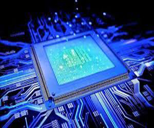
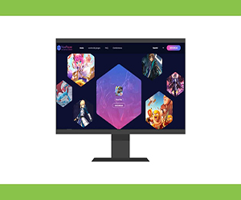

Adriana Hernández
“Desde hace muchos años contamos con la atención personalizada de Central PC y estamos muy satisfechos con su servicio, con un total compromiso y un excelente desempeño
Fernando Gonzales
“Central PC nos brindó siempre un servicio informático de calidad superior, destacándose la velocidad de respuesta y de ejecución, su eficacia y excelente atención de todo su personal.”

Eloy Bornaz
“Durante años Central PC ha realizado un excelente servicio, manteniendo nuestros equipos y servidores actualizados y en prefecto funcionamiento, algo fundamental para el desarrollo de nuestra actividad.”